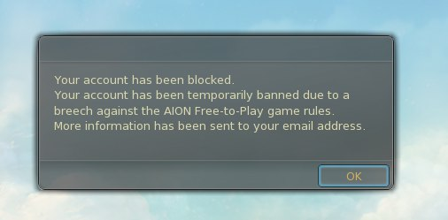

Page 2 of 5
Re: Dangerous Instances ?
Posted: Tue Sep 26, 2017 1:03 am
by smaion40
It has been a hot topic in the forum for quite a long time. Doing these instances (or using any hack at all) is a risk the player knows is taking.
as Cyan said:
"Thank you for the discussion on this. If you do believe someone is abusing these instances we encourage you to submit a ticket to CS with the information you have as we look into the matter. As a reminder, please do not name-and-shame anyone on the forums as it is a violation of the rules."
If people is dumb enough to do this blatantly in front of everyone's face then there's nothing else to expect but a review in your account and a future ban. Just be smart and do it when nobody is around and do a "normal" amount of runs and not a nyerkton to reach lvl 75 in one day.
Re: Dangerous Instances ?
Posted: Tue Sep 26, 2017 12:39 pm
by ashotka
smaion40 wrote: ↑Tue Sep 26, 2017 1:03 am
It has been a hot topic in the forum for quite a long time. Doing these instances (or using any hack at all) is a risk the player knows is taking.
as Cyan said:
"Thank you for the discussion on this. If you do believe someone is abusing these instances we encourage you to submit a ticket to CS with the information you have as we look into the matter. As a reminder, please do not name-and-shame anyone on the forums as it is a violation of the rules."
If people is dumb enough to do this blatantly in front of everyone's face then there's nothing else to expect but a review in your account and a future ban. Just be smart and do it when nobody is around and do a "normal" amount of runs and not a nyerkton to reach lvl 75 in one day.
Dunno... But seems like there is no checking script yet in this dungeon. I already did it a lot of times. Sure, i'm entering KB when no ppls around and i'm always in invisible status and in my friendlist no random ppls. But i'm always do it by myself w/o teleporting scripts and even placed 2 traps at start, when anuhart appears

This is, of course, not a panacea, but it's just for sure, cos i remember how they ban me for doing baruna instance w/o starting timer and not used a single door (i failed a bit and recalled after 1st kill with keys in my inventory)
Re: Dangerous Instances ?
Posted: Thu Sep 28, 2017 1:56 pm
by ashotka
Don't wanna create a new thread... Just one question :3
My bot was grinding at spot and when i checked it... AS were crushed and bot kicked for being afk. After logging in i found my bot standing on rookie server at elyos starting point at lvl 1 (Akarios Plains). Then i tried to use recall and it was binded at the same point
What did you think about this situation? Was it GM or just some lag after AS crush?
PS bot is still runningm but on other spot and don't get banned

Re: Dangerous Instances ?
Posted: Sat Oct 28, 2017 9:53 am
by Elyosproo
hi my sweethearts
anyone here who got a ban for doing kroban aka FP?
Re: Dangerous Instances ?
Posted: Sat Oct 28, 2017 10:55 am
by Boo
Elyosproo wrote: ↑Sat Oct 28, 2017 9:53 am
hi my sweethearts
anyone here who got a ban for doing kroban aka FP?
EU? nope
Re: Dangerous Instances ?
Posted: Mon Nov 06, 2017 4:21 pm
by ashotka
So, my friends, share with us, who got banned today?

Re: Dangerous Instances ?
Posted: Mon Nov 06, 2017 5:01 pm
by LordSnack
same , on EU they Ban for Kroban Base.
Re: Dangerous Instances ?
Posted: Mon Nov 06, 2017 5:08 pm
by ashotka
LordSnack wrote: ↑Mon Nov 06, 2017 5:01 pm
same , on EU they Ban for Kroban Base.
Any proofs or at least weighty arguments that they banned for kroban? i did KB and GoK on all my 8 accounts till event week and only 1 was banned today... it was like 6th or 7th acc
Re: Dangerous Instances ?
Posted: Mon Nov 06, 2017 5:16 pm
by LordSnack
Epvp same many people say they get banned for Kroban or Garden. i know i fly with 12 Accounts and my main get banned for 2 Weeks o.o
Re: Dangerous Instances ?
Posted: Mon Nov 06, 2017 7:24 pm
by ashotka
Another account temporary banned, yesterday i did Kroban and GoK... fresh account)